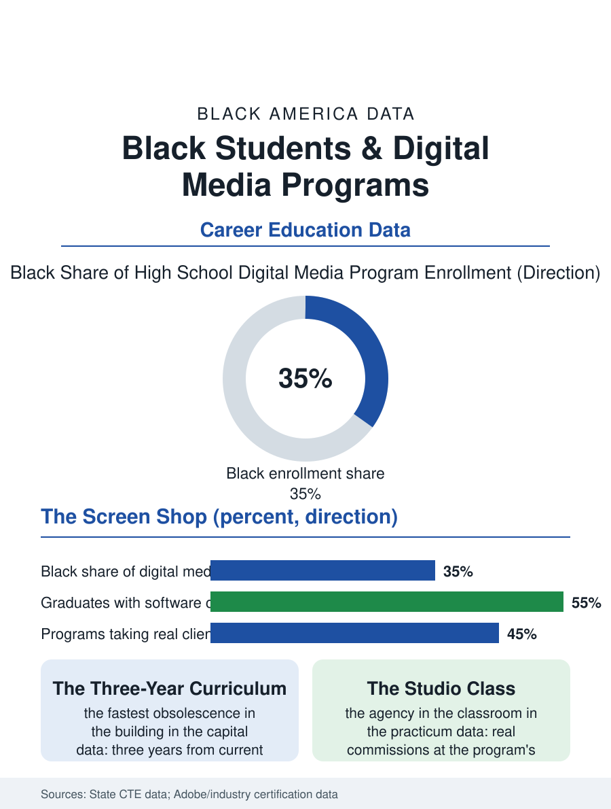

Black Education
Fluency Into Discipline: Black Students and Digital Media
The platform's natives taxed into professionals by the brief and the deadline, in the shop that obsolesces fastest. The digital media file.

The digital media and graphic design program is the CTE file's newest shop: the lab of screens where the yearbook's and the video's and the brand's production are taught as one curriculum, enrolling Black students whose home fluency in the platforms is the program's raw material, against an industry whose junior tiers the employment file counts. This article reads the digital media program file.
The Lab of Screens
The program's capital is the software's license and the machine's generation, an equipment file whose obsolescence cycle is the fastest in the CTE building, three years from the industry's current to the museum's, so that the district's refresh budget is the curriculum's honesty in a way the welding booth's decade never demanded. The pedagogy is the portfolio's: the student's work product, the printed piece, the produced video, the client's real commission from the school's own departments and the neighborhood's businesses, constituting the assessment in the market's terms as the culinary room's meals do, with the certification file, the software's own credentials, as the hiring document the portfolio carries into the interview. The enrollment's draw in the urban programs is the file's datum, the lab being the one shop where the students arrive with a decade of the platform's informal practice, the editing and the posting of their own channels, so that the program's first task is the conversion of the fluency into the discipline, the deadline and the client's brief and the file's hygiene, a conversion whose success the portfolio's polish records. The program's show, the end-of-term screening and gallery in the school's own theater, is its public audit in the culinary room's pattern, the neighborhood reading the students' names on the work the district commissioned, and the local business owners in the audience are the hiring file's first round conducted as a reception. The ethics file, the manipulated image and the synthetic media's arriving curriculum, is the lab's newest subject and its most necessary, taught by the only faculty in the building whose trade it is.
The Client in the Classroom
The practicum's form is the agency's: the advanced class run as the studio, taking the school's and the district's and the community's commissions at the program's rates, the students rotating through the account and the production roles under the instructor's art direction, an arrangement whose product, the athletics program's graphics and the theater's posters and the local business's first logo, is the neighborhood's visual environment in part, authored by its own students in the pattern of the print shop file's first media company, rebuilt on the screen. The industry's gate above the program is the internship file's and the junior designer's market, whose composition the advertising file's census gives, and whose portfolio standard the program's graduates meet at rates the placement data credit to the client work's reality over the classroom exercise's.
Fluency Into Discipline
The digital media file closes on the conversion the program sells, because the attention economy's natives are not its professionals until the brief and the deadline and the revision have taxed the fluency into a trade, and the lab is where the tax is first collected, by an instructor whose own portfolio is the program's credibility in the pattern of the trade files. The program's equity file is the refresh budget's, the affluent district's lab running the industry's current suite on the current machines while the poor district's runs the education of the workaround, a skill the industry also values and rarely credits in the interview. The association counts the programs in the CTE census's fastest-growing line. The file's last entry is the export's progress bar at the term's end, the student's commission rendering for the client's morning, in the lab where the neighborhood's young image-makers are learning the difference between the post and the product, which is the industry's whole curriculum in one file's transfer. The client's revision, the third round of the logo's changes against the brief's original terms, is the lab's lesson in the profession's patience, graded by the instructor as the portfolio's most employable page. The patience, in the instructor's grading, outranks the polish. The brief, in the end, is the teacher. The record is the work, and the work is standing by to be read.
More in Black Education
Black Educational Attainment: High School Parity, the College Gap
About 89 percent of Black adults hold a high school diploma and one in four holds a bachelor's degree or higher — the attainment ladder, the college completion gap, and the generational trend.
Historically Black Colleges and Universities: Enrollment and Degrees
More than 100 HBCUs enroll roughly 290,000 students and award about one in six Black bachelor's degrees — an outsized share from a small sector. The federal education data.
Black College Enrollment: 2.4 Million Students
About 2.4 million Black students are enrolled in American colleges — nearly two-thirds of them women. The NCES enrollment data by sector, level, and trend.
Source: State career and technical education data; digital media certification and program accreditation reports.